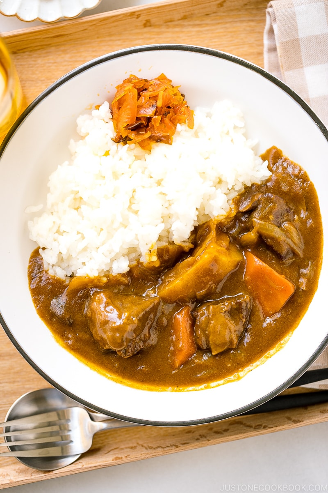

Japanese Curry

Japanese comfort food, now available at home!
Starting with a Western beef stew base, this beloved comfort food blends Western and Eastern flavors together into a delicious and hearty meal
Ingredients
- 2 onions
- 2 Tbsp neautral cooking oil
- 2 Tbsp unsalted butter
- 1 russet potato
- 1 carrot
- 6 cremini mushrooms
- 1 knob ginger
- 1 clove garlic
- 1 1/4 lb boneless chuck roast
- pinch of kosher salt
- freshly ground black pepper (to taste)
- 1 Tbsp all-purpose flour
- 1/2 cup red wine
- 1/2 Tbsp Japanese curry powder
- 1 Tbsp tomato paste
- 4 cups beef broth
- 1/8 apple
- 1 Tbsp Worcestershire sauce
- 2 Tbsp milk
- 1 bay leaf
- 1 box Japanese curry roux
Recipe instructions
Prepare the ingredients
- Cut the onions into thin slices
- Preheat a large pot on medium heat. Add half the butter, half the oil, and the onions to the pot
- Saute the onions until tender, translucent, and a bit caramelized (20-25 minutes)
- Peel and cut the russet potato into thirds
- Continue cutting the ppotato into halves or quarters. Then soak potato pieces in water to remove the starch inside
- Peel and cut the carrot diagonally while rotating it in quarter turns between cuts
- Clean the mushrooms. Then, cut into thin slices
- Grate the ginger and mince the garlic
- Cut the beef into bite sized cubes
- Lightly season the beef then coat with flour
To Cook the Curry
- Preheat a pan on medium-high heat. Add remaining oil and butter. Cook the beef in batches to ensure each piece gets even browning
- Sear the beef cubes on each side (3-4 minutes total)
- Deglaze the pan with wine and set pan aside while onions cook
- Add garlic and ginger to the pot with caramelized onions
- Add curry powder and tomato paste and saute for 1 minute
- Add the seared beef, any juices from the resting plate, and deglazed pan liquid to the pot and mix together to cook. Allow the alcohol from the wine to evaporate (3 minutes)
- Add the carrots and mushrooms. Then, add just enough beef stock to cover all the ingredients. Cover and bring to a boil
- Once boling, skim the surface of the broth for any impurities within the soup
- Grate the apple directly into the broth. Then, add the Worcestershire sauce and milk
- Add the bay leaf and cover the pot. Simmer on low heat until meat is tender (around 2 hours)
- When the beef is tender, add the potatoes and simmer for 15 minutes
- When the potatoes are tender, turn off the heat and discard the bay leaf
- Slowly dissolve bits of the curry roux block into the broth using chopsticks or a spoon to break up the pieces and incorporate the curry roux into the broth. Finish by simmer on the lowest heat until curry has thickened slightly.
Return to top
Return to main page